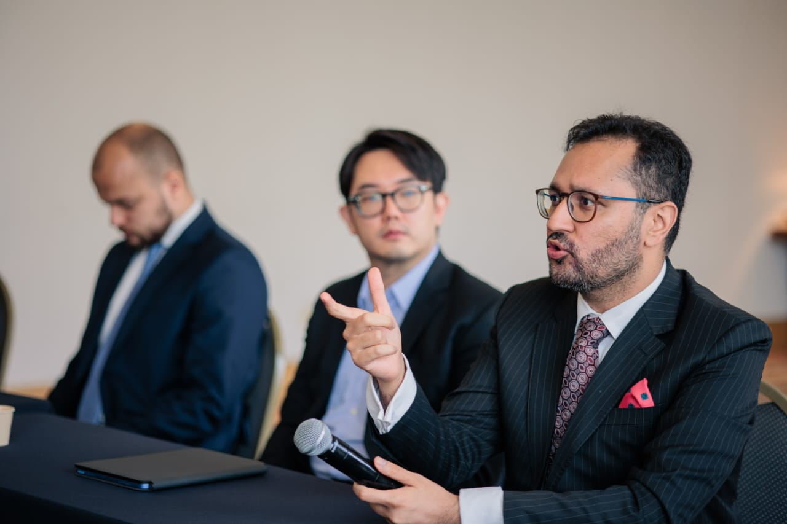

The public record of broadcast appearances, print citations, and speaking engagements. The calibre of the peer group tells the story.
Broadcast
Over 300 appearances on PTV World, Pakistan's international broadcast channel, as a political and legal analyst. Coverage spans Pakistan's national security posture, South Asian strategic dynamics, active conflict in the Middle East, the geopolitics of financial regulation, and global capital flows. Officially appointed as PTV World's South America Correspondent — reporting from São Paulo, Brazil.
Safi Ghauri on Regime Change in Venezuela — PTV World Newsroom with Sana Maqbool. Safi's segments begin at 17:00 and 27:00.
Recent Print & Digital Citations
Print & Digital Citations
Academic & Institutional
Speaking Engagements

Safi Ghauri at the DARTE Digital Assets Roundtable Experts series, co-organised by the European Commission and UNIDROIT, São Paulo, March 2026.
Global Governance & Intergovernmental
| Event | Date | Role & Context |
|---|---|---|
| Horasis Global Summit, University of São Paulo | Oct 2025 | Speaker on digital assets regulation. 1,000 leaders from 50 countries. Opened by the Vice Governor of São Paulo state. |
| COP30 Side Events, Belém, Brazil | 2025 | Speaker on blockchain technology for climate finance infrastructure. UN climate conference. |
| UNODC Sensitization Workshop for Terror Financing Stakeholders on use of Cryptocurrencies and Dark Web | 2023 | Trainer. United Nations Office on Drugs and Crime. Funded by U.S. Embassy / INL. |
| FATF Panel on Cryptocurrencies, Pakistan | 2023 | Panellist. Financial Action Task Force. |
Major International Conferences
| Event | Date | Role & Context |
|---|---|---|
| DARTE — European Commission + UNIDROIT, World Trade Center São Paulo | Mar 2026 | Panellist. Co-organised by European Commission and UNIDROIT. MiCA and Travel Rule across Latin America. |
| Stellar Meridian, Copacabana Palace, Rio de Janeiro | Sep 2025 | Speaker. 1,200+ attendees. Former Central Bank of Brazil President keynoted. PayPal PYUSD launched at conference. |
| ETH Latam, São Paulo | 2025 | Panellist, closed-door high-level regulatory session with ETH Latam leadership. |
| Singularity by Stellar, Goa, India | Feb 2026 | Legal mentor on digital assets and regulation. |
Regulatory & Institutional
| Event | Date | Role & Context |
|---|---|---|
| Panel on Chinese Infrastructure Contracts, Islamabad | 2023 | Invited address on interpretation and commercial implications of Chinese infrastructure contracts, delivered to civil service and policy officers. |
| NEPRA Blockchain in Energy Trade Webinar, Pakistan | Jun 2023 | Presenter alongside NEPRA Chairman Tauseef H. Farooqi. |
| Training Civil Servants — Freedom of Expression, Islamabad | 2023 | Trainer for government officials. |
| Google Developers Club — Web3 Panel | 2022 | Panellist. |
Multi-Year Institutional Judging
| Event | Date | Role & Context |
|---|---|---|
| IMechE Speak Out for Engineering — UAE nationals, Middle East regionals, Pakistan nationals, Africa regionals, Global finals | 2018–2024 | Distinguished Judge, all tiers, every year since 2018. UK Institution of Mechanical Engineers. |
| IMechE Abul Kalam Design Challenge, National Pakistan | 2019 | Distinguished Judge. |
Speaker Bios
Download Approved Headshots →Barrister and strategic adviser operating at the intersection of digital asset regulation, cross-border capital flows, and geopolitical intelligence across MENA, Latin America, and Asia.
Safi Ghauri is the Managing Partner of Esquare Legal and a Partner of Tahota Law Firm (top-100 global, 4,000+ practitioners). A barrister qualified at Lincoln's Inn and registered to practise in Brazil, he advises on digital asset regulation and cross-border transactions across MENA, Brazil, and China — while maintaining a parallel record as a geopolitical analyst with over 300 broadcast appearances and citations in The Independent (UK), Bloomberg Arabic, CNA, and Reuters.
Barrister Safi Ghauri is the Managing Partner of Esquare Legal, a crypto-native cross-border law firm operating across the UAE, Brazil, Pakistan, and China through a partnership with Tahota Law Firm (top-100 global, 4,000+ practitioners, 30+ offices). Qualified at Lincoln's Inn and registered to practise in Brazil, he is based in São Paulo. His landmark cases include Pakistan's largest-ever defamation award, the NRO litigation, the Panama Leaks Election Commission proceedings, representing all associations of Pakistan International Airlines (300,000+ employees) in the PIA privatisation challenge, and a successful cryptocurrency matter before three Supreme Court of India judges. He secured Pakistan's first BNPL licence and established the country's lending fintech sector. He led the RUDA project, one of the largest Chinese overseas infrastructure investments at the time, valued at $4.8 billion. He secured one of VARA's earliest virtual asset licences and has overseen hundreds of millions of dollars in fundraising. A political analyst with over 300 broadcast appearances, he trained at Pakistan's National Defense University and serves as PTV World's South America Correspondent. He has spoken at the Horasis Global Summit, COP30, and the European Commission and UNIDROIT's DARTE expert series. He has trained judges and prosecutors for UNODC and panelled at FATF.
Speaking Topics
For broadcast commentary, speaking invitations, panel bookings, and media enquiries:
Response within 24 hours.